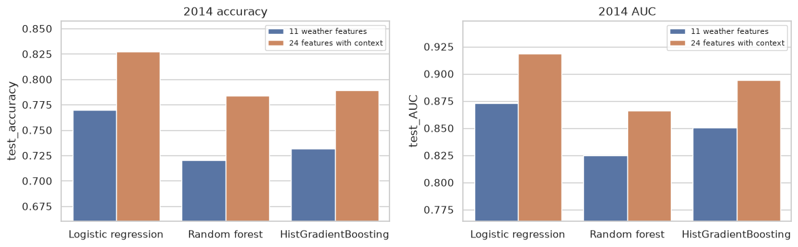

Practice tasks covered
- Practice 1 – CART decision tree for polluted-day categorisation
- Practice 2 – ensembles: bagging, random forest, boosting, voting, stacking

| Model (2014) | Accuracy |
|---|---|
| Single decision tree | 0.72 |
| Boosting | 0.79 |
| Logistic regression | 0.827 |
| Stacking | 0.830 |
Ensembles clearly beat a single tree, and stacking ties a well-tuned logistic regression.